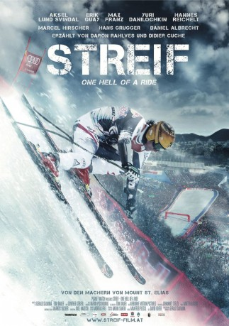

#2559 Streif: One Hell of a Ride
 
 IMDB-Wertung: 6.7 / 10
IMDB-Wertung: 6.7 / 10  Metascore: 0
Metascore: 0 
Die Hahnenkammrennen der Skistrecke Streif in Kitzbühel zählen zu den schwierigsten und gefährlichsten der Welt. Jedes Jahr verfolgen Millionen Menschen dieses Spektakel. Für die Dokumentation "Streif �� One Hell Of A Ride" wurde über zwölf Monate hinweg verfolgt, wie sich fünf Athleten auf dieses sportliche Großereignis vorbereiteten, das dem Sieger ewigen Ruhm beschert. Manche allerdings mussten die Jagd nach dem prestigeträchtigen Titel teuer bezahlen. Schwere Stürze haben schon für Verletzungen gesorgt, die Karrieren frühzeitig beendeten. Aksel Lund Svindal aus Norwegen, Erik Guay aus Kanada, Max Franz und Hannes Reichelt aus Österreich sowie Yuri Danilochkin aus Weißrussland nehmen die Herausforderung trotzdem an, lassen sich von den Gefahren der Hahnenkammrennen nicht abschrecken. Sie stehen vor der Aufgabe, ihre eigenen Grenzen auszutesten
Jahr: 2014
Dauer: 110 Minuten
FSK: 0
Land: Österreich Studio: Red Bull Media HouseTonspuren:
Untertitel: Deutsch,
Auflösung: 1080p (1920x808) Größe: 7741 MB
Genre: Dokumentation, Sport, Geschichte
Regisseur: Gerald Salmina, Tom Dauer
Drehbuch: Gerald Salmina, Tom Dauer, Axel Naglich
Soundtrack: Manfred Plessl
Darsteller:
- Bode Miller als Himself
- Aksel Lund Svindal als Himself
- Erik Guay als Himself
- Max Franz als Himself
- Yuri Danilochkin als Himself
- Hannes Reichelt als Himself
- Marcel Hirscher als Himself
- Hans Grugger als Himself
- Daniel Albrecht als Himself
- Felix Neureuther als Himself
- Franz Klammer als Himself
- Hermann Maier als Himself
- Daron Rahlves als Himself
- Didier Cuche als Himself
- Todd Brooker als Himself , archive footage
- Natali Danilochkin als Herself
- Bernhard Flaschberger als Himself , archive footage
- Jeff Frisch als Himself
- Michael Gabl als Himself - Neurochirurg
- Mandi Goller als Himself - Logistik
- Herbert Hauser als Himself - Pistenchef
- Sepp Hechenberger als Himself - Abschnittsleiter
- Johann Ernst Hinterseer als Himself
- Michael Huber als Himself - KSC Präsident
- Günter Hujara als Himself - FIS Renndirektor
- Axel Naglich als Himself
- Peter Obernauer als Himself - Rennleitung
- Franz Pfurtscheller als Himself - ehemaliger Sicherheitschef
- Ken Read als Himself , archive footage
- Erwin Resch als Himself , archive footage
- Ingrid Rumpfhuber als Herself
- Toni Sailer als Himself , archive footage
- Leopold Saltuari als Himself - Neurologe
- Karl Schranz als Himself , archive footage
- Hois Werlberger als Himself - Abschnittsleiter Mausefalle
- Sepp Wurzenrainer als Himself - Sicherheitschef
Datei: X:\Dokumentationen\Sport\Streif One Hell of a Ride (2014, FSK0, 1920x808).mkv seit 23.11.2015
Festplatte: HD Serien(SU-Z)+Dokus+Musik
 Es gibt insgesamt 34 Filme in der Gruppe 'Dokumentationen\Sport'
Es gibt insgesamt 34 Filme in der Gruppe 'Dokumentationen\Sport'